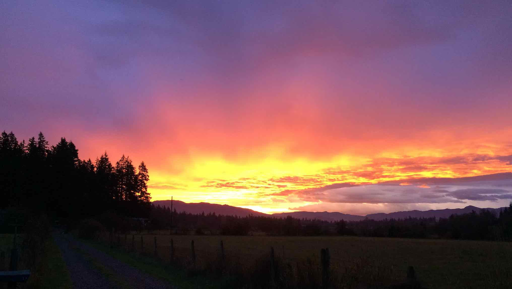

Welcome!
I created this website to start documenting everything that is me. Page updated as desired and, as with the IOF, is always under construction. Try not to get too bored. However, this is a snapshot of the mind of a *cough* young aged man who is lost, or not, or has no idea.
Also I love Gary Larson.
@ Photo cred to badass photographer Garret Schmidt
"When we try to pick out anything by itself,
we find it hitched to everything else in the universe."
-John Muir
"Dream the dreams of others then you will be no ones rival"
-Vedder

"And then there is the most dangerous risk of all
- the risk of spending your life not doing what you want on the bet you can buy yourself the freedom to do it later.”
― Randy Komisar
"The mountains are calling and I must go"
-John Muir
Connect @